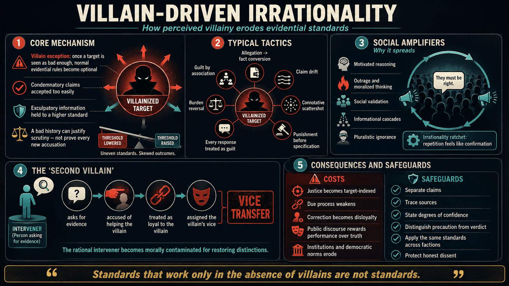

The burden quietly flips
Suspicion is treated as proof, and the accused—or anyone asking for precision—must disprove a claim that was never properly established.
An essay on rationality and public judgment
How hating a target weakens evidence, justice, and dissent.
A real wrongdoer can deserve condemnation. The danger begins when that condemnation is treated as permission to lower every other standard—to accept weak claims, skip distinctions, punish before specifying, and smear anyone who asks for proof.
Conceptual preview

Open full size ↗The villain exception
Villainy may be real. The exception appears when the target’s bad character is allowed to answer questions that still require their own evidence.
Suspicion is treated as proof, and the accused—or anyone asking for precision—must disprove a claim that was never properly established.
Several ugly descriptions are thrown at the target like mud at a wall. The emotional stain remains even when no single charge is made clear.
Repetition feels like independent confirmation. A stadium wave looks centrally directed from afar even when each person only copied the neighbor.
A person who asks for evidence is recast as an ally of the target, then assigned the target’s real or imagined vices.
Public consequences
Once a community rewards confidence over care, rational correction becomes socially expensive. People learn to stay silent, leave, or repeat the approved conclusion with matching heat.
The result is an irrationality ratchet: every repetition makes the claim look more settled, and its apparent settledness makes the next correction more punishable.
Rational safeguards
The answer is not moral numbness. It is to keep each conclusion attached to the evidence and standard that actually supports it.
Break a sweeping accusation into acts, knowledge, assistance, intent, evidence, and confidence.
Count independent witnesses and methods, not the number of outlets repeating the same source.
Distinguish possible, plausible, likely, corroborated, and established.
Temporary protection may be justified before guilt or durable punishment is established.
Ask whether the same evidence and procedure would seem fair if the political identities were reversed.
The full paper
The essay develops the psychology, social incentives, rhetorical tactics, institutional effects, objections, research program, and practical audit tools in full.
Open-access PDF
Phil Stilwell · Independent Scholar